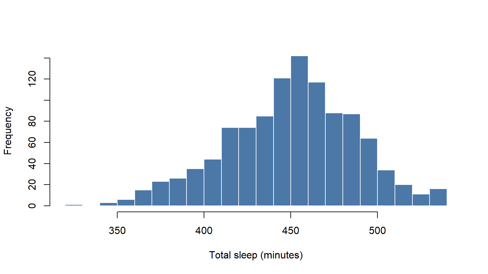
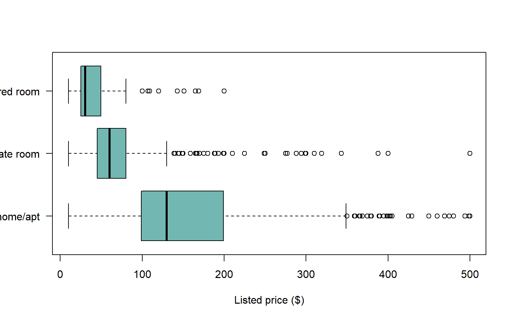
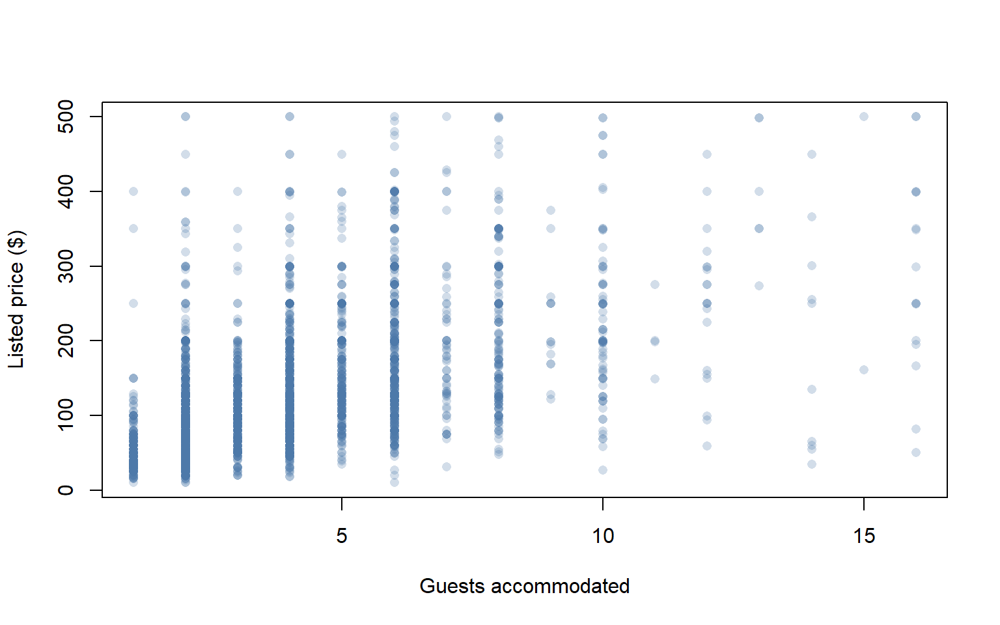

Interpreting Data Visualizations
Move from what the graph shows to a defensible business conclusion
Interpretation is more than description
A strong interpretation connects visible evidence to the question being asked without claiming more than the data can support.
Use this sequence:
- Observation: What pattern, comparison, or unusual feature is visible?
- Evidence: Which values, groups, or time periods support the observation?
- Explanation: What plausible mechanisms could produce it?
- Limitation: What else could explain it, and what can the graph not establish?
- Implication: What decision or next analysis does the result support?
Example 1: a distribution
Weak: Most people sleep around the average.
Stronger: Main-sleep duration is concentrated in the middle of the observed range, with fewer records at both extremes. Before using the mean as the only summary, compare it with the median and inspect the unusual low and high values. The graph describes recorded sleep events in this sample; it does not establish how much sleep people need.
The stronger version identifies the shape, names a useful follow-up, and limits the population claim.
Example 2: group comparisons

Observation: The price distributions differ by room type, and each group contains substantial variation.
Evidence: Compare medians, IQRs, and the degree of overlap rather than focusing only on the most expensive listing.
Limitation: Room type is not the only difference among listings. Neighborhood, capacity, amenities, review history, and timing may all be related to price. Filtering at $500 improves readability but means the graph does not display the full upper tail.
Implication: Room type is a useful starting segmentation variable, but a pricing recommendation should examine additional variables and the unfiltered data.
Example 3: relationships

A reasonable interpretation is that listings with greater capacity tend to have higher listed prices, while prices still vary greatly at the same capacity. This is an association, not proof that increasing capacity causes price to rise.
What the scatterplot does not establish
- whether the pattern is statistically reliable in a larger population;
- whether omitted variables explain the relationship;
- whether price was actually paid;
- whether the source snapshot represents another market or season; or
- whether the relationship remains after accounting for room type and neighborhood.
Interpret the visual encoding too
Before interpreting the subject matter, check how the graph was built.
| Check | Why it matters |
|---|---|
| Axis limits and transformations | Truncation or a log scale changes visual distance |
| Counts versus percentages | Different denominators can reverse a comparison |
| Aggregation | A monthly average can hide daily variation |
| Filters and exclusions | The displayed population may be narrower than the title suggests |
| Color and size | Encodings may imply importance or magnitude |
| Missing values | Unshown observations may not be missing at random |
| Sample size | A dramatic pattern based on a few records may be unstable |
Avoid common overclaims
| Avoid | Prefer |
|---|---|
| “X causes Y” from an observational graph | “X and Y are associated in these data” |
| “The groups are significantly different” from visual separation | “The displayed distributions differ; a formal test is needed for statistical significance” |
| “Most customers prefer…” without a denominator | “Among the respondents shown, X of N (Y%) selected…” |
| “Sales increased because of the campaign” | “Sales increased after the campaign; seasonality and other changes remain possible explanations” |
| “There is no relationship” | “No clear relationship is visible at this scale” |
A reusable interpretation paragraph
The graph shows [pattern] for [population and period]. The clearest evidence is [specific comparison or value]. One plausible explanation is [mechanism], although [alternative explanation or data limitation] means the graph does not establish [unsupported claim]. The result suggests [decision or next analysis].
TipRead the title last
First inspect the axes, units, legend, filters, and source. Then read the title and decide whether its claim matches the evidence actually displayed.
Background
This page replaces an earlier ECO 230 slide export about advanced interpretation. Its examples have been rebuilt with current course data and an explicit evidence-limitations-implications framework.